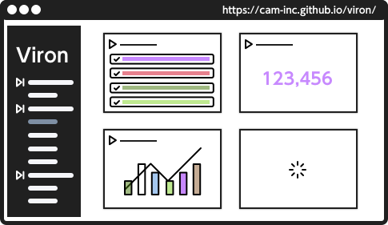
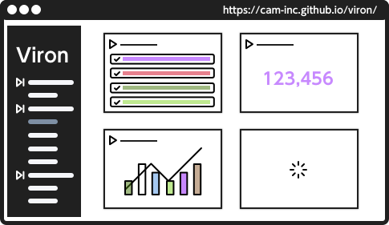

Welcome to Viron

Vironは、サービス運用に必要となる運用管理画面をOSSとして提供します。
もう運用管理画面をゼロから構築する必要はありません。代わりに、OpenAPI Specificationを満たすAPI定義書を用意して下さい。そうすれば、あなたのサービス専用の運用管理画面が出来上がります。

Vironは、サービス運用に必要となる運用管理画面をOSSとして提供します。
もう運用管理画面をゼロから構築する必要はありません。代わりに、OpenAPI Specificationを満たすAPI定義書を用意して下さい。そうすれば、あなたのサービス専用の運用管理画面が出来上がります。